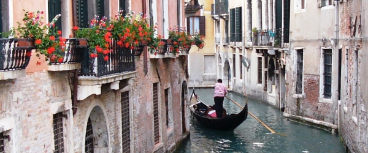
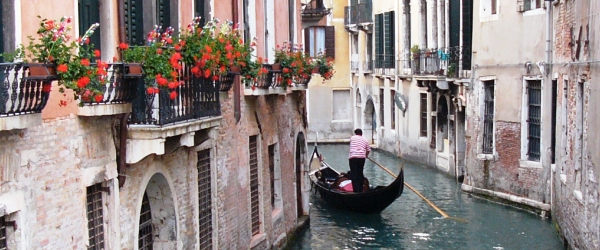

Venetië

 



Informatie
Venetie is een kleine stad, zeer geconcentreerd, elke hoek, monument, kerk of museum bevat een stukje geschiedenis, een verhaal, een manier om te zeggen of een traditie, niet te rekenen al het nieuws en gebeurtenissen die dagelijks de stad biedt aan de burgers en bezoekers.
Surf naar de inhoud van onze pagina's, ontdek de geschiedenis van Venetie, musea, monumenten, kerken, theaters, vindt u alle bezienswaardigheden en eigenaardigheden die het Venetie een unieke stad, de manier om te zeggen, feesten, internationale aanstelling als Carnaval, de verlossing en de historische regatta, evenals lokale gebeuren, als baksteen een Brack markten en amateurs regatta's te maken Venetie zo bijzonder.
Surf naar thDiscover ook onze suggesties om de stad, de route (van de klassiekers tot de extravagante types), bars, restaurants, hotels en winkels te bezoeken.